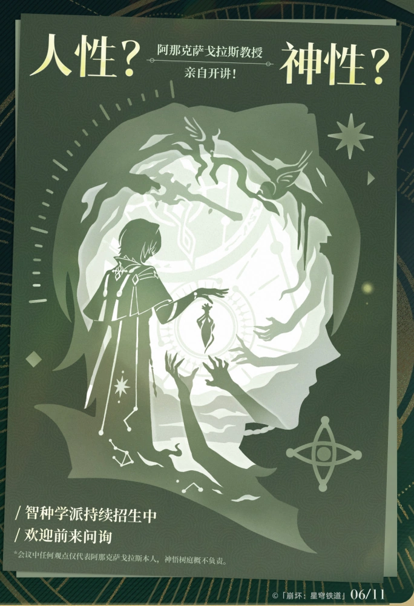

金牌导师：那刻夏
平易进人
性格开朗
经验丰富
长相帅气
那刻夏一直在研究的炼金术高深莫测，还主张人神同源 [3]。阿那克萨戈拉斯不喜欢学生称呼他“那刻夏”的真实原因，是因为这个名字倒过来念就成了“下课呐”，阿那克萨戈拉斯担心这会造成一些负面的心理暗示。虽然那刻夏是如此的严厉，但对于广大学生来说，能在他门下学习绝对是一种荣幸 [6]，由于阿那克萨戈拉斯难记，学生私底下便称他“那老师”、“夏老师”、“那个夏老师” 。 那刻夏是大地兽激推，在那刻夏看来，大地兽是非常好的倾听者，他还买了很多大地兽周边，晚上会换上大地兽的睡衣，抱着大地兽玩偶，享受一段由他推制品陪伴的良好睡眠时光 [3]。在常人眼里大地兽愚昧无知，但那刻夏认为它有诸多优点，沉稳，安静、脾气好、食量大 ，甚至想下次在学院门口挂上一块牌子：“不懂大地兽者，不得入内” 。那刻夏还加入了大地兽关爱协会，是杰出志愿者，并发表了论文《大地兽长寿指南：从饲养到陪伴》、《大地兽肌肉结构解析与微表情解读》。那刻夏睡觉时所穿大地兽的睡衣，为了尽可能还原，他会确保帽檐超过头顶中线，只有充分包裹头部才能更好地模仿大地兽。色彩选择上，那刻夏更推荐大地兽蓝，尾巴的填充也必须蓬松柔软有弹性，这样能有助于入睡
遐蝶女士
那刻夏老师的学生 |